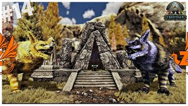

Los bosses son las criaturas mas poderosas que hay dentro de las arcas, cumplen la funcion de jefe final y aportan gran valor a tu partida, estos bosses son de las pocas formas de obtener el Elemento, este elemento es la tecnologia mas avanzada que se puede desbloquear en el juego, tanto en armas, estructuras, tecnologia de fabricacion e inclusive monturas mejoradas para tus criaturas. A pesar del elemento que nos otorgan al derrotarlos, no hay que ser avariciosos a la hora de ir a cazar a los bosses ya que por algo son lo que son, representan el mayor peligro que hay dentro de las arcas, las supervisan y se encargan de mantener el orden dentro de estas.
El primer jefe que nos encontraremos en nuestro andar sera "La Primera Forma De Vida", es decir la BroodMother Lysrix, una gigantesca araña con la capacidad de escupir enormes bolas de veneno, ademas es capaz de invocar decenas de arañas pequeñas que no pararan de perseguirte hasta que derrotes a su madre.
El segundo jefe a derrotar sera "La Segunda Forma De Vida", asi es como se le dice al Megapithecus, un enorme mono albino con la fuerza suficiente para arrojar enormes rocas hacia ti, como respaldo siempre lleva un gran ejercito de Gigantopithecus y Mesopithecus dispuestos a dar su vida por su rey.
La ultima forma de vida que nos encontraremos sera el Dragon, una magestuosa criatura alada que surcara los cielos proximos a su volcan, sera el jefe mas poderoso que nos enfrentaremos hasta ahora, disparando llamaradas de fuego ardiente asi como invocando meteoritos hacia ti, y de vez en cuando yendo a atacarte a zarpazos por mera diversion.
El Overseer, aquel que supervisa todo lo que ocurre y lo que no ocurre dentro de The Island, el jefe final de este mapa asi como uno de los mas dificiles que nos encontraremos a lo largo del juego, el creador de las formas de vida, al no tener un cuerpo consiso y ser una amalgama de elemento puede adoptar forma y habilidades de cualquier forma de vida.
La manticora, una horroroza criatura protectora del mapa Scorched Earth, tanto por tierra como por aire es un enemigo de temer, no duda a la hora de eliminar a cualquiera que rompa con el orden de sus tierras, con la capacidad de arrojar bolas de veneno concentrado es imposible de enfrentarla a no ser que se tenga una mascara de gas resistente.
Antiguamente un cientifico obsecionado con el elemento, investigaba las arcas codo a codo con Helena Walker hasta que su obsecion por el elemento llevo a Edmund Rockwell a caer en la demensia inyectandose altas dosis de este extraño material, en consecuencia perdio todo rastro de humanidad y ahora yase enterrado en el fondo de Abberration esperando a que alguien intente activar el portal para poder escapar y retomar sus experimentos ahora con un tono mucho mas grotesco y macabro.
Ubicado en las partes mas profundas de extinción, en un bosque, se encuentra un gran ser hecho de ramas y de la naturaleza misma, puede invocar forest wyverns especiales que junto a el libraran una intensa batalla. Tiene la particularidad junto a otros dos titanes de que podemos domesticarlo para usarlos como asedio en nuestra batalla contra el King Titan
Ubicado en la zona mas fría de Extinción, en el domo de la nieve, se encuentra El Titan mas agil y letal de todos. Es el mas grande de los tres titanes normales y el que mas daño le puede llegar a causar a nuestros dinosaurios domesticados. Es tanta su fuerza y velocidad que si queremos domesticarlo necesitaremos encerrarlo en una trampa antes ya que de no ser asi sera imposible de dominar.
Ubicado en la zona mas seca y aridad, en el domo de la desierto, se encuentra este coloso alado. Este titan puede volar y lanzar potentes rayos que podrán dañar gravemente a nuestras criaturas. Si se quiere domesticar, de debe de tener un Tapejara con montura tek para poder dispararle rayos de energia a sus nodos corruptos y liberarlo del control del King Titan.
Ubicado en medio de la zona corrupta de Extinción, el Rey Titan es capaz de destrozar criaturas de tan solo un golpe y es el jefe mas grande de todo Ark. Cuando lo enfrentemos en su mayor dificultad (Alpha) seremos capaces de fusionar nuestros Mek para crear un MegaMek, una enorme maquina de asedio tecnologica desarrollada exclusivamente para derrotar al Rey Corrupto.
Rockwell, en su proceso de controlar la nave Genesis, logro alterar la simulacion de dicha nave haciendo asi que los supervivientes destinados a recuperar la tierra caigan derrotados en su alteracion virtual. Para derrotar a la version virtual de Rockwell necesitaremos superar misiones que se presentan en la simulacion para poder debilitarlo y en un punto, apagarlo.
El responsable de corromper la nave Genesis, Rockwell en su versión remasterizada nos forzara a derrotarlo en su arena desde donde controla la nave, mientras invoca Reapers y tentáculos para intentar acabar con nosotros, en este punto seremos la ultima esperanza del proyecto Genesis.
La gigantesca y magestuosa reina de los wiverns de crystal nos esperara en su nido con todos sus subditos rodeandola listos para defender su trono, durante este feroz combate deberas de destruir los huevos de los wiverns sin nacer para evitar futuros enemigos.
Ubicado en su arena exclusiva, el Rey de los Dinopithecus y todos sus súbditos nos atacaran a quemarropa, estos ultimos poseen tal lealtad que daran la vida para evitar la caída de su gran rey. Estos monos desarrollar un gran intelecto que son capaces de combinar sus heces con armamentos explosivos y utilizarlos para atacarnos
El Fenrir es una gigantesca criautra similar a un lobo el cual esta encadenado en la cima de un monte antiguo, se dice que cuando el fenrir se libera comienza el ragnarok, en el cual esta criatura peleara contra Thor dando muerte al mismo. En el juego, esta criatura sera el jefe final del mapa Fjordur.
A continuacion mostraremos algunas criaturas que no son jefes dentro del juego pero por el gran poder que poseen los jugadores las apodamos como "minibosses", es decis jefes secundarios del juego.
Ubicado en la profundidades de Ragnarok, en una antigua cueva inundada por la lava, este golem es mucho mas grande que su variante normal de otros mapas y deberemos enfrentarlo con estrategias a distancia para poder vencerlo y quedarnos con el presiado tesoro que resguarda.
Se encuentra en las profundidades del bioma oceánico de la simulación Genesis. Un minijefe muy complicado de derrotar debido a la gran presión de agua que nos perjudicara a lo largo de la pelea como en el viaje a la misma. Esta gran criatura marina es capaz de dar grandes golpes y no debe ser subestimada.
En lo profundo de una cueva en la helada montaña de Ragnarok, se encuentra esta rara especie de Gusanos de la muerte, su reina aguarda en su nido lista para defenderlo a toda costa, una vez la reina haya caido tendremos acceso a la camara donde se encuentra el artefacto de la manada, ademas de grandes cantidades de tesoros y recompensas que esta especia coleccionaba.
Este mítico y exclusivo ser aparece únicamente en el mapa de The Island, durante el evento de Halloween "Fear Ascended". Este estará deambulando de forma aleatoria a lo largo del mapa éntrelas 12 a.m y 6 a.m dándonos un corto periodo de búsqueda. Si logramos encontrarlo, y derrotarlo, dejara zombdodos que son exclusivas criaturas que solo apareceran una vez el coloso que convina un dodo y un tiranosaurio rexhaya caido.
Esta feroz bestia alada pariente del Dodorex esta presente únicamente en la madrugada de The Island durante el evento de "Fear Ascended", esta criatura mitica no dudara a la hora de escupir sus llamaradas ardientes y perseguirnos sin descanso hasta atraparnos. Si logramos derrotarlo aparecerán una manada de wivern zombies los cuales podremos reclamar para montarlos.
Beyla esta insipirada en una diosa de la mitologia nordica, diosa de la fertilidad y las abejas asi como discipula de freya. En el juego sera un enemigo volador que nos lanzara puas venenosas que nos afectaran incluso montado en nuestras criaturas, para combatirla se recomiendan los Megatherium ya que esta especie es especialista en cazar insector y obtiene un incremento de fuerza cuando lo hace.
Un oso rocoso y helado que habita en las profundidades de una caverna en Jotunheimr, una helada tierra ligada al Yggdrasil el arbol del mundo y la vida. Durante nuestro combate contra Steinbjorn este nos arrojara grandes rocas asi como estacas hechas de hielo, tambien lo acompañaran pequeños escombros helados que lo protegeran pase lo que pase, una vez derrotado este nos dara una piedra helada como trofeo.
Hati y Skoll son los dos hijos del Fenrir, tambien asociados al ragnarok, Hati persigue a la Luna sin descanso, y Skoll persigue al Sol sin pausa alguna, se dice que durante el ragnarok cada uno alcanzara a su respectivo objetivo devorandolos y dando comienzo al fin de los tiempos. En el juego Hati y Skoll son dos lobos feroces que custodian la piedra del portal hacia el monte donde esta encadenado en Fenrir.
Aqui te dejaremos un espacio para que puedas darnos tu opinion sobre el jefe mas dificil del juego.
Tu voto ha sido enviado.